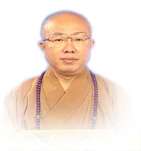

| 傳孝法師 傳孝法師生於屏東內埔農家，幼稟異資、頗具善根。二十三歲皈依大崗山脈 開證上人，披剃出家，後畢業於佛光山叢林大學唯識系，時應邀赴各地演講說法。於民國六十六年接任慈恩寺，民國七十三年新建大雄寶殿及慈恩文教大樓落成，同時還受聘兼任打鐵準提寺、竹田德修禪寺、西螺報恩寺、台東普陀山觀音禪寺等數間寺院住持，目前更傳承其恩師 開證上人之法脈，接下高雄宏法寺及多間寺院住持，由此可見 傳孝法師法緣之廣。 心靈的淨化先要有正確的人生觀.以佛法八正道為淨化心靈的準則.正見.正思惟.正語.正業.正命.正精進.正念.正定。心靈有了依止.自然生活穩定.社會國家祥和安樂.呈現一片清淨和樂的人間淨土。傳孝法師的人生觀，邀您一同分享。 |
 |
慈恩佛教網電子郵件信箱chi.en@msa.hinet.ne